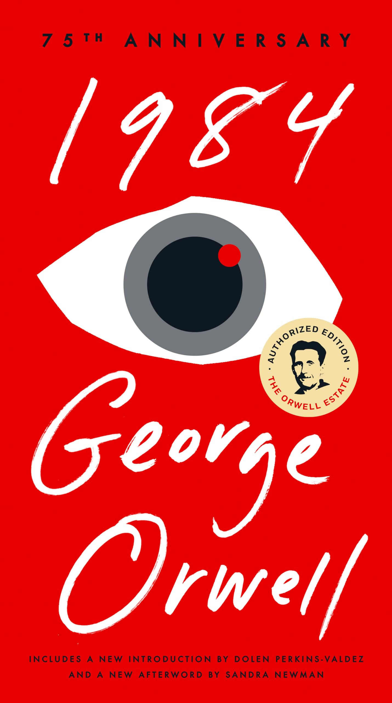

1984
"1984" - культовый роман-антиутопия Джорджа Оруэлла, изображающий тоталитарное общество, где правительство осуществляет тотальный контроль над всеми аспектами жизни граждан. Главный герой, Уинстон Смит, работает в Министерстве правды, где занимается фальсификацией исторических документов, но втайне мечтает о свободе и восстании против системы.
Читать онлайн